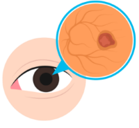
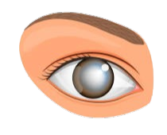
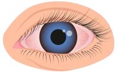

Diabetic Eye conditions
Click Images to reveal information

Glaucoma
Glaucoma is a group of diseases that damage the optic nerve, usually due to high pressure inside the eye. It develops slowly and often has no symptoms until vision loss begins.
Vision loss due to glaucoma cannot be restored. However, regular screenings are key to catching it early and taking action to prevent further damage.


Diabetic Retinopathy
This condition occurs when high blood sugar damages the blood vessels in the retina. In early stages, you may have no symptoms. Over time, it can cause blurry vision, floaters, dark spots, or even blindness.
It is the most common eye disease in people with diabetes and is often preventable with regular eye screenings.

Cataracts
Cataracts cause the clear lens of the eye to become cloudy, making vision blurry, hazy, or dull. They tend to develop earlier and progress faster in people with diabetes.
You might feel like you're looking through a foggy window. Surgery is used to treat and is safe and effective in most cases.

Macular Degeneration
This condition affects the macula, the part of the retina responsible for central vision. It isn't caused by diabetes but is more common with age, especially in older adults with chronic conditions.
You may notice trouble seeing faces, reading, or driving and it typically affects people over age 50.

Dry Eye Syndrome
Dry eye is a common condition that usually falls into two main types:
Evaporative Dry Eye and Aqueous-Deficient Dry Eye. Evaporative Dry Eye happens when tears evaporate too quickly due to a lack of oil, often caused by blocked glands in the eyelids.
ADDE occurs when the eyes don’t produce enough tears, which is sometimes linked to autoimmune conditions like Sjögren’s syndrome. Many people experience a combination of both types, known as Mixed Dry Eye.
Common symptoms include dryness, burning, blurred vision, a gritty or scratchy feeling, and light sensitivity.
